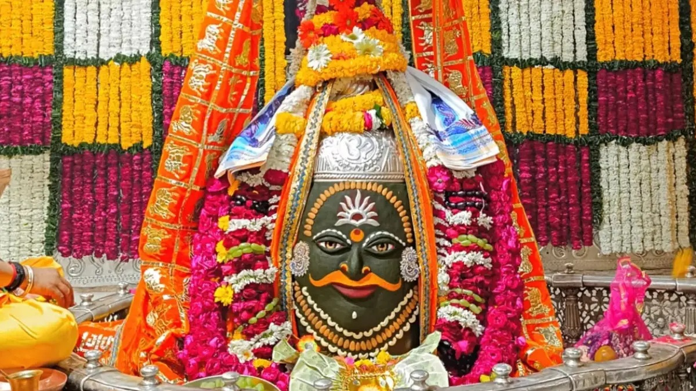
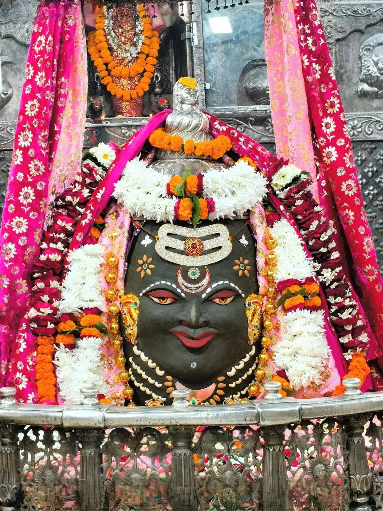
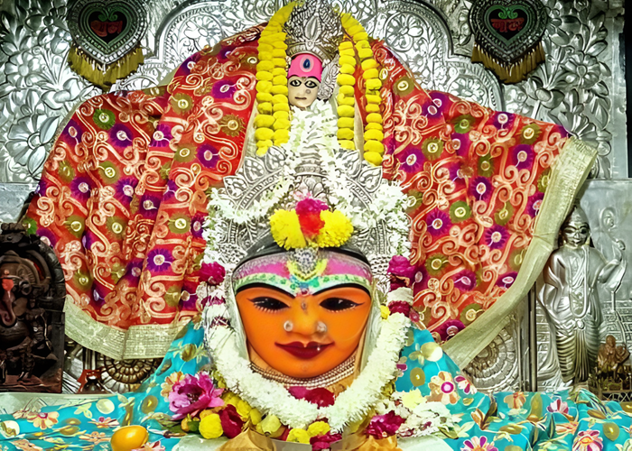
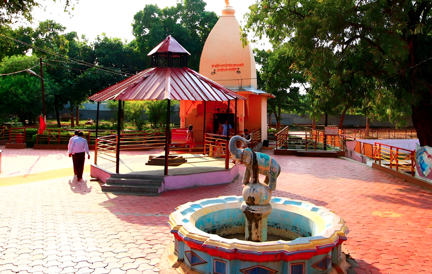
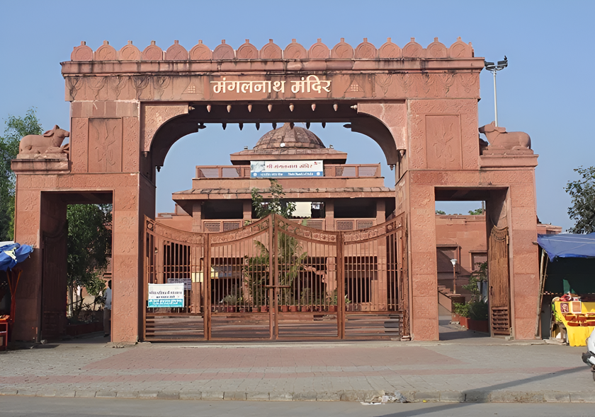

ब्रह्मांड का केंद्र। मोक्ष की नगरी।
महाकाल का शासन, भैरव का रक्षण।

भस्म आरती समय
प्रातः 4:00 AM - 6:00 AM (बुकिंग अनिवार्य)
संपूर्ण विश्व में यह एकमात्र शिव मंदिर है जहाँ शिवलिंग का मुख दक्षिण (मृत्यु की दिशा) की ओर है। इसका आध्यात्मिक अर्थ है कि महाकाल मृत्यु को भी नियंत्रित करते हैं। अकाल मृत्यु का भय यहाँ समाप्त हो जाता है।
यह आरती ब्रह्म मुहूर्त में होती है। भगवान को चिता भस्म (प्रतीकात्मक) अर्पित की जाती है।
Mahsua Tip: आरती देखने के लिए 1 महीना पहले ऑनलाइन बुकिंग करें।
1. गर्भ गृह: श्री महाकालेश्वर (मुख्य दर्शन)
2. मध्य तल: श्री ओंकारेश्वर महादेव
3. शिखर तल: श्री नागचंद्रेश्वर (केवल नागपंचमी पर खुलता है)
900 मीटर लंबा भव्य कॉरिडोर जो शिव लीलाओं का वर्णन करता है। यह भारत के सबसे बड़े धार्मिक गलियारों में से एक है।
कॉरिडोर में 108 विशाल स्तंभ हैं, जिन पर भगवान शिव के आनंद तांडव स्वरूप को उकेरा गया है।
यहाँ सप्त ऋषियों की भव्य प्रतिमाएँ स्थापित हैं जो भारतीय ज्ञान परंपरा और गुरु-शिष्य परंपरा का प्रतीक हैं।
महाकाल लोक की सुंदरता रात में अद्भुत होती है जब आधुनिक लाइटिंग से मूर्तियाँ जीवंत हो उठती हैं।
यह दुनिया का एकमात्र मंदिर है जहाँ भगवान की मूर्ति मदिरा पान करती है। वैज्ञानिक भी इस रहस्य को सुलझा नहीं पाए हैं कि मदिरा कहाँ जाती है (कोई छिद्र या नाली नहीं मिली)। यह अहंकार त्याग का प्रतीक है।
भगवान काल भैरव हमेशा मराठा पगड़ी पहनते हैं। यह परंपरा 1761 से चली आ रही है जब महादजी शिंदे ने पानीपत युद्ध के बाद मराठा साम्राज्य की वापसी के लिए मन्नत मांगी थी।
इन्हें उज्जैन का कोतवाल (Chief of Police) कहा जाता है। लोग यहाँ कोर्ट-कचहरी और मुकदमों में जीत के लिए 'सरसों के तेल का दीपक' जलाने आते हैं।


यह 51 शक्तिपीठों में से एक है। पौराणिक कथाओं के अनुसार यहाँ माता सती की कोहनी (Elbow) गिरी थी। यहाँ के दो विशाल दीप स्तंभ (Deep Stambh) जब जलाए जाते हैं, तो दृश्य अद्भुत होता है।
Must Visit in Evening
यह शिक्षा का प्राचीन केंद्र है जहाँ भगवान श्री कृष्ण, बलराम और सुदामा ने गुरु संदीपनी से शिक्षा ग्रहण की थी। माना जाता है कि कृष्ण ने यहाँ 64 दिनों में 64 कलाएँ सीखी थीं।
Education Hub
मत्स्य पुराण के अनुसार, यह मंगल ग्रह (Mars) का जन्मस्थान है। जिन लोगों की कुंडली में 'मंगल दोष' होता है, वे यहाँ विशेष 'भात पूजा' (चावल पूजा) करवाने आते हैं।
Astrology Center
Jail Road, Bhairav Garh, Ujjain, Madhya Pradesh 456003
(Located on the banks of River Kshipra)
Daily: 6:00 AM - 10:00 PM
Aarti: 7:00 AM (Morning) & 6:00 PM (Evening)
Free for all visitors.
(Special Puja items & fast-track tickets may vary)
"The best time to visit is early morning for Bhasma Aarti at Mahakal, or after 6:00 PM for the evening Aarti at Kaal Bhairav."